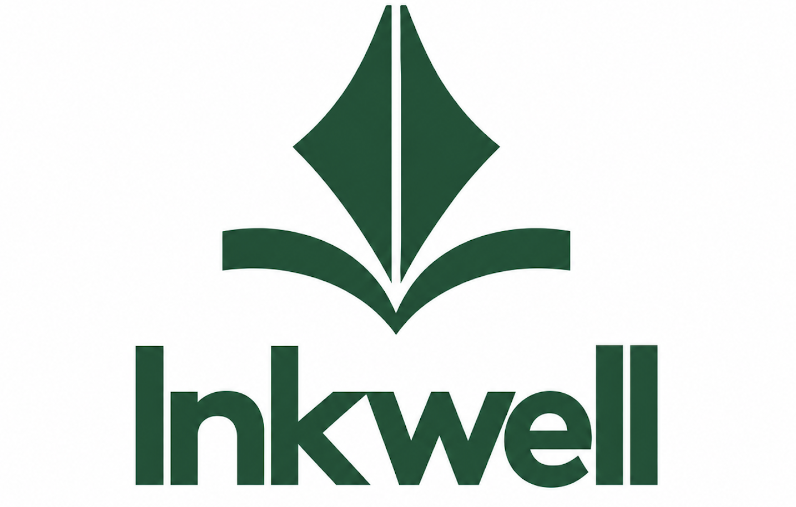

I’m a computer science graduate interested in software engineering, with a growing focus on backend and data-driven systems. I enjoy building things and using code not only to solve problems, but also to uncover them.
Work Experience
Working Student - Knipp Medien und Kommunikation09/2025 - Present
Managed invoices, customer inquiries, and day-to-day administrative workflows using internal software tools
Supported internal IT tasks, including workstation reinstallation/setup and LDAP configuration
Contributed to the development of internal AI agents
Assistant Teacher - Technical University of Dortmund, Information Systems03/2025 - 10/2025
Weekly tutorials
Homework correction
Exam correction
Education
B.Sc. Computer Science, TU Dortmund - 2026
Graduation Grade: 2.0
Focus areas: Database Systems, Software Engineering, IT Security
Elite High School in Tunisia, Mathematics Major - 2021
Ranked in the top 2.6% nationwide (Baccalaureate)
Head of Marketing for TEDxYouth
1st Place, Regional Microsoft Excel Competition
Bachelor's Thesis
Empirical Evaluation of
Query Optimization Techniques
Using Controlled Execution Plans
Query optimization is made up of many decisions, and while each of them can be studied on its own, in the end they all come together to produce one final plan. This thesis looks at both sides of that process. Using PostgreSQL and research frameworks that allow selected optimizer decisions to be controlled, I examine cardinality estimation, join ordering and physical operators across different benchmarks. The experiments look at where individual techniques help, how their importance changes between workloads, and what happens to these improvements once the rest of the optimizer is involved. Rather than introducing a new optimization technique, the work is about understanding the decisions we already try to improve, both individually and as part of the bigger picture.
Hi! I'm Farah, a 2026 CS graduate from Tunisia. I built this website as a way to get back into web development and show another side of me beyond the serious technical one.
from medicine to code
In 2023, I switched both careers and countries. It didn't surprise anyone who knew me. I've always been technical and creative-driven, and my love for mathematics and computer science eventually won. My time in medicine gave me a lot of maturity. Even though it was only the first cycle, it felt like years of growth packed into a short time. Managing the stress of learning 200-page textbooks, navigating how society sees you, and dealing with people of every kind and condition made me live through many stages of life in under two years. That field will always stay in my heart, and my respect for doctors only grew. But I missed the creativity and the "how to think" side of things, so I came back to my roots.
beyond the code
Living alone in Germany and financing my own studies since I arrived shaped me even more.
When I'm not coding or doing research, you'll catch me at the gym, at the cinema (I love horror movies), or baking for people, which is my favourite form of stress relief. I'm a Chelsea FC fan unfortunately and piano player. I love improvising blues, and until I get a piano here in Germany, I mostly just watch others play.
Skills
Languages & Web
Java
Kotlin
SQL
Python
HTML
CSS
JavaScript
C++
Backend
PostgreSQL
MySQL
DuckDB
Spring Boot
REST APIs
JUnit
Tools
Git
TBD
Docker
Maven
XML / Regex
IntelliJ IDEA
VS Code
Projects
Inkwell
In progress

A better alternative to Wattpad and other poorly managed writing platforms. Inkwell focuses on story quality by reviewing chapters before they are published. Readers can save books, follow their reading progress, and discover better-written stories.
An "Airbnb for workspaces" for Dortmund: a map-based platform to find and rent vacant shops, offices and rooms by the hour, day, week or year, with AI-assisted search. Built in a team of four at the DO-DATA hackathon.
A Kotlin-based desktop card game developed as part of the Softwarepraktikum at TU Dortmund. Built with BoardGameWork, featuring local multiplayer, interactive gameplay, and automatic scoring.
A hands-on write-up where I explored trunk-based development by actually trying the workflow: short-lived branches, pull requests, CI, feature flags, and merging back into main.
An academic seminar project exploring DeepBach, a generative model for creating Bach-style chorales. I studied how the model works and presented the topic through a research paper, presentation, and audio examples.
A command-line Java app for managing university building data in a MySQL database. You can list, add and delete buildings, with input validation and JDBC prepared statements. The sample data is based on TU Dortmund.